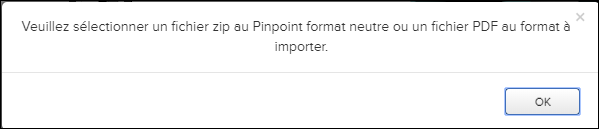

Non applicable pour Pinpoint Standalone Light.
- fichier PDF
Vous pouvez sélectionner un seul fichier PDF pour importer le fichier directement dans la bibliothèque spécifiée dans Pinpoint. S'il existe un fichier PDF portant le même nom, Pinpoint remplace le fichier existant.
- Pinpoint Neutral Package (fichier ZIP)
Un paquet neutre Pinpoint est un fichier ZIP contenant le HTML et les images nécessaires au rendu d'une publication par Pinpoint. Vous pouvez exporter ce type de paquet manuellement à partir du gestionnaire de données à l'aide de la fonction de révision de téléchargement dans le volet de révision. Il contiendra un fichier d’information Information.json ainsi que le paquet neutre Pinpoint pour la révision exportée. En important cela dans un gestionnaire de données, vous pouvez recréer la même structure de bibliothèque pour la révision, y compris les mêmes noms et ID pour les bibliothèques, la publication et la révision.
Vous pouvez également télécharger une bibliothèque complète dans Data Manager. Cela crée un fichier ZIP contenant la dernière version complète révision et toutes les révisions INCRÉMENTALES ultérieures. Vous pouvez importer ce fichier ZIP dans Pinpoint ou Pinpoint Autonome. Reportez-vous au Flatirons Data Manager User Guide pour connaître les étapes requises pour télécharger une bibliothèque.
Remarque : Vous pouvez uniquement importer des paquets ZIP de révision complète pour une seule importation de révision. Le fichier ZIP créé lorsque vous téléchargez une bibliothèque complète vous permet d'importer la dernière révision complète et toute Révisions INCRÉMENTALES.
Si vous sélectionnez un type de fichier autre qu'un fichier ZIP ou PDF, un message d'erreur apparaît:

Pour importer un package ou un fichier PDF neutre Pinpoint, procédez comme suit:
-
Cliquez sur l'icône Importer un paquet de données
 dans la Barre d’action.
Remarque : L'icône package de données d'importation peut être située dans le menu déroulant
dans la Barre d’action.
Remarque : L'icône package de données d'importation peut être située dans le menu déroulant Autres actions si la largeur de votre page est
inférieure ou égal à 1280 pixels.La fenêtre de sélection de fichier apparaît.
Autres actions si la largeur de votre page est
inférieure ou égal à 1280 pixels.La fenêtre de sélection de fichier apparaît.